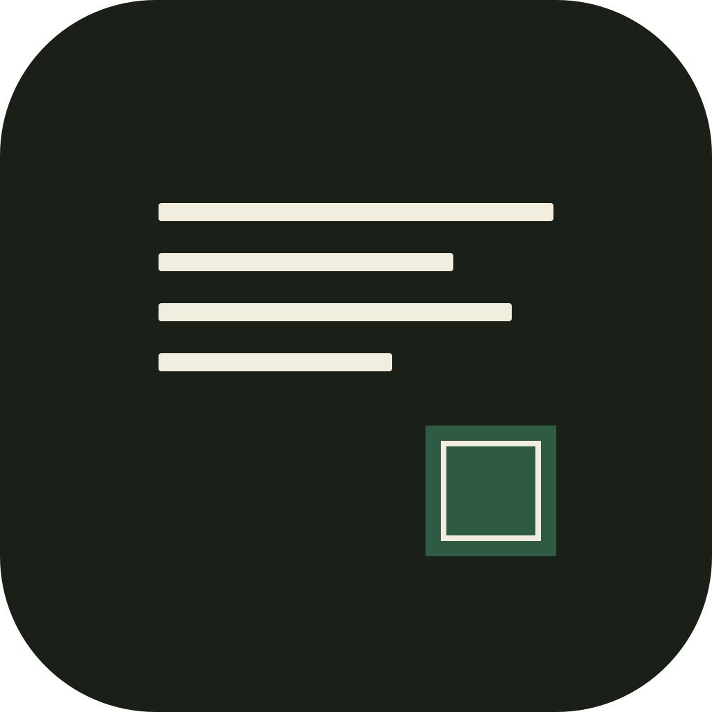
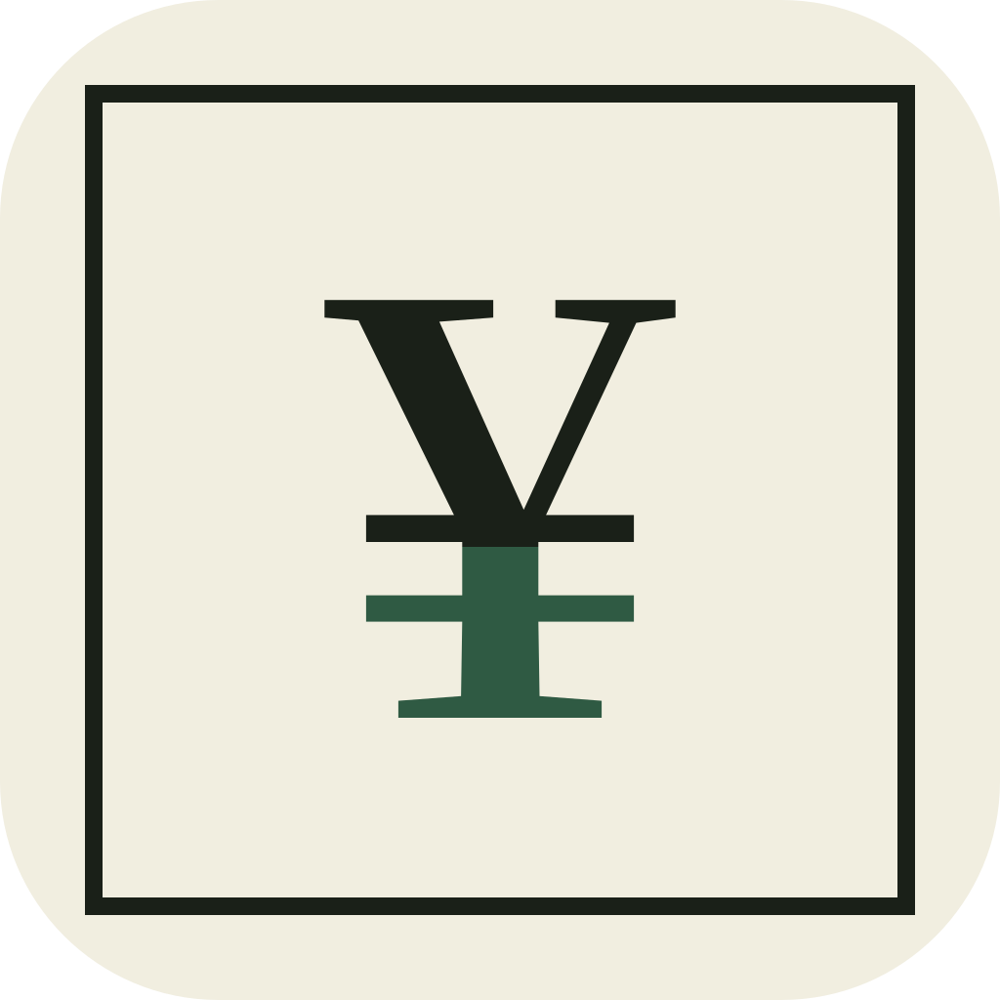
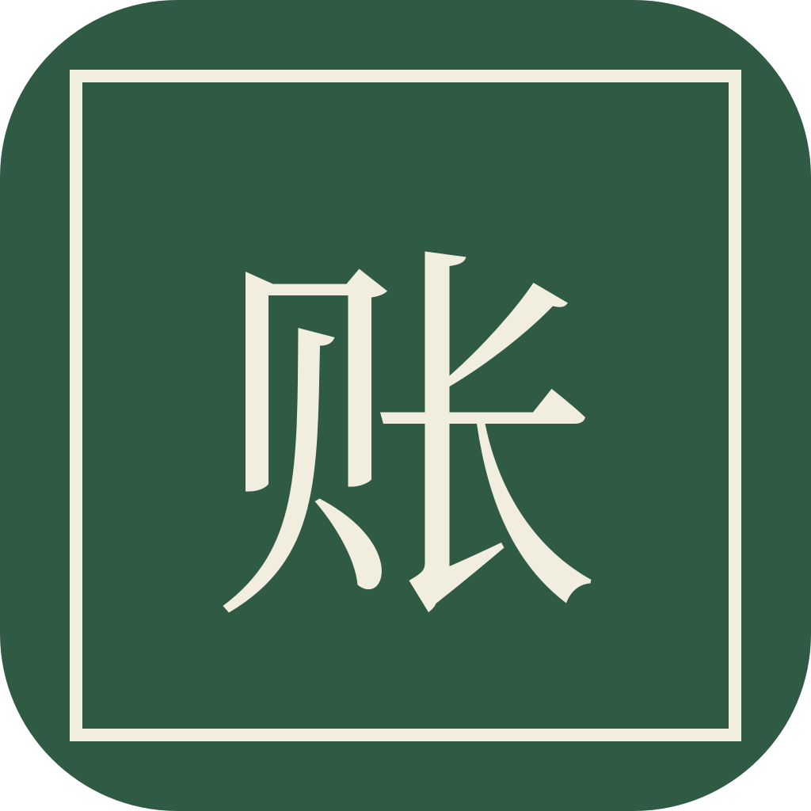

把「花在哪」缩成 62px 的记号：一页账、一张收支单、一枚私章。同一套松墨纸色，只换主角；桌面只改左上角这一个图标，其余不动。
四条账线 + 一枚绿印。最接近现在的图标，像从月结单上裁下的一角。

最稳。48px 下账线仍然清楚，适合想保留现在这版的人。
一张带墨框的纸，¥ 的下半截是松绿。上半是支出，下半是收入。

最像单据。最贴「收支」这件事；纸色在桌面上偏安静。
整块松绿、一圈纸边、一个「账」字。不是账本，是给账本盖的章。

最认得出。桌面存在感最强；48px 下字会变密，但绿块和纸边还在。